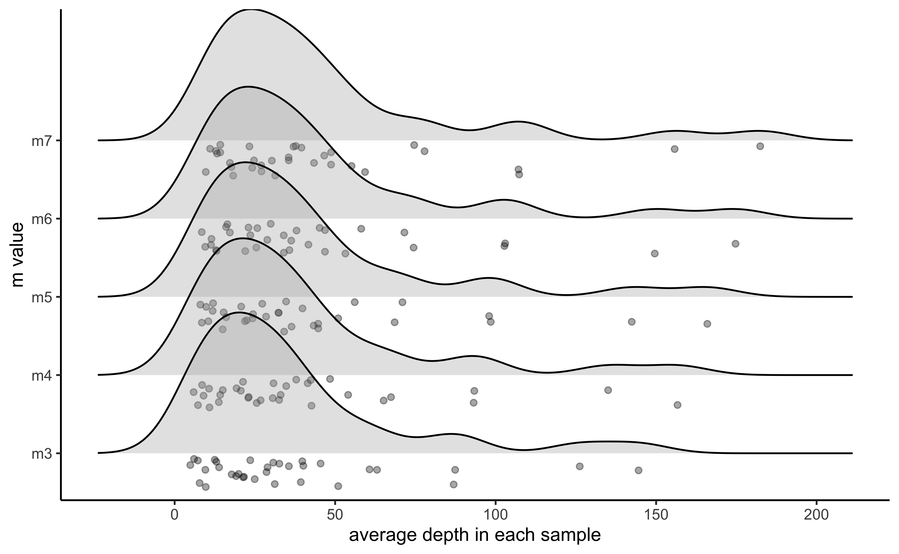
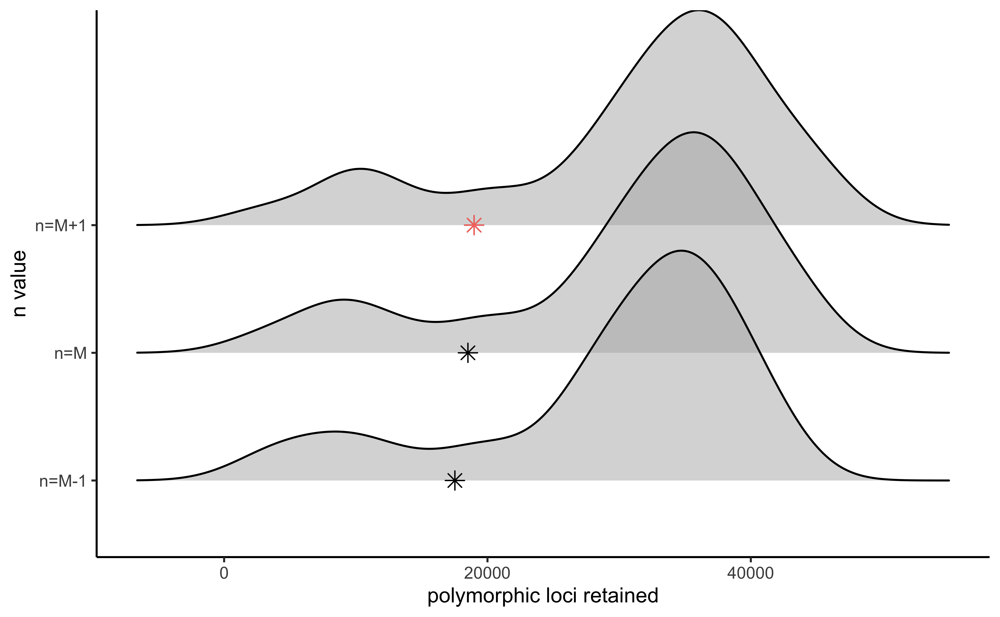
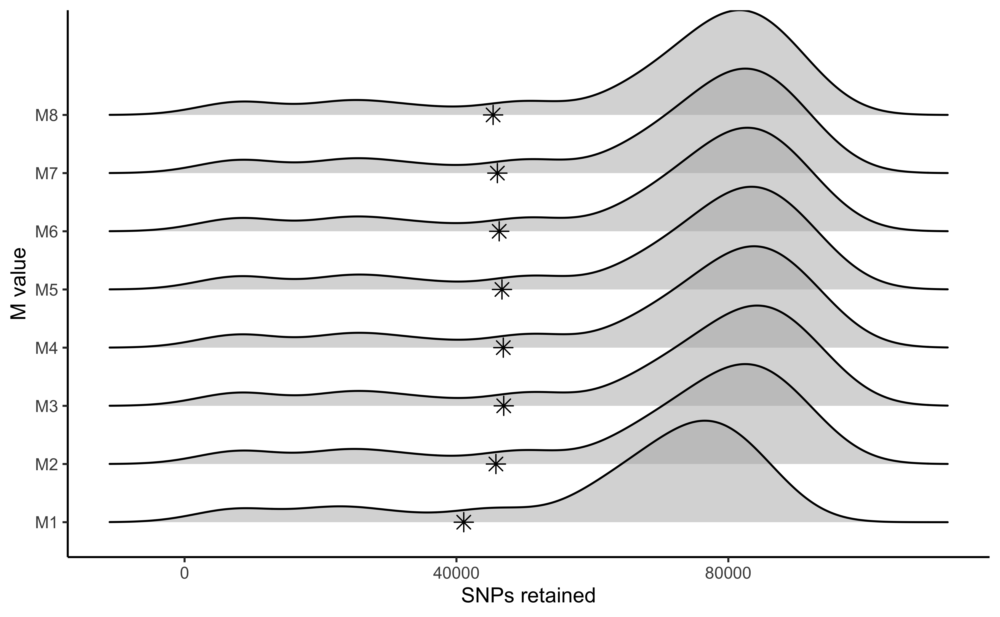
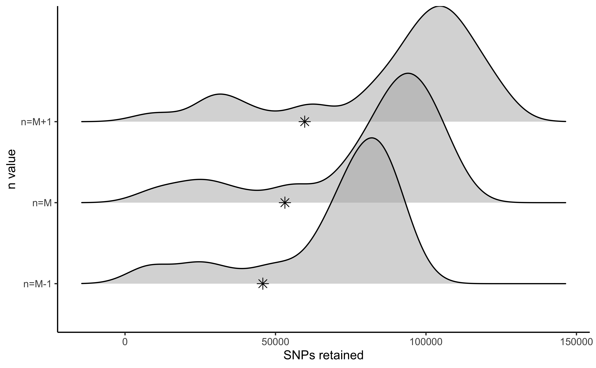
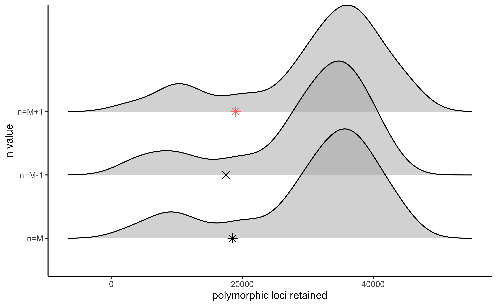
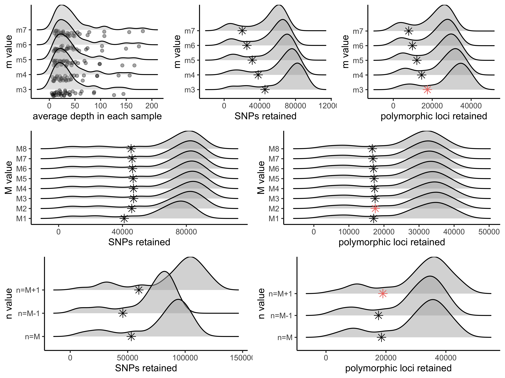

optimize_denovo.Rmd#!/bin/sh
#
#SBATCH --job-name=denovo.rad.hippo # Job Name
#SBATCH --nodes=1 # nodes
#SBATCH --cpus-per-task=15 # CPU allocation per Task
#SBATCH --partition=bi # Name of the Slurm partition used
#SBATCH --chdir=/home/d669d153/scratch/diadema.dinops # Set working d$
#SBATCH --mem-per-cpu=1gb # memory requested
#SBATCH --time=10000
files="908108_H_diadema_Gatokae
908150_H_dinops_Guadalcanal
908151_H_diadema_Guadalcanal
908152_H_diadema_Guadalcanal
908153a_H_dinops_Guadalcanal
908154_H_dinops_Guadalcanal
908155_H_dinops_Guadalcanal
908156_H_diadema_Guadalcanal
908208_H_diadema_Guadalcanal
KVO150_H_diadema_Isabel
KVO168_H_diadema_Isabel
KVO169_H_diadema_Isabel
KVO170_H_diadema_Isabel
KVO171_H_diadema_Isabel
KVO172_H_diadema_Isabel
KVO242_H_dinops_Isabel
KVO243_H_dinops_Isabel
KVO244_H_dinops_Isabel
KVO245_H_dinops_Isabel
KVO246_H_dinops_Isabel
KVO248_H_dinops_Isabel
THL1156_H_demissus_Makira
THL1172_H_dinops_Guadalcanal
THL1173_H_dinops_Guadalcanal
THL17193_H_diadema_Ngella
THL17194_H_diadema_Ngell
THL17195_H_diadema_Ngella
THL17197_H_diadema_Ngella
THL17198_H_diadema_Ngella
THL17199_H_diadema_Ngell
WD1705_H_diadema_E_New_Britain
WD2047_H_diadema_Simbu_Prov
WD2074_H_diadema_Gulf_Prov"
# Build loci de novo in each sample for the single-end reads only.
# -M — Maximum distance (in nucleotides) allowed between stacks (default 2).
# -m — Minimum depth of coverage required to create a stack (default 3).
#here, we will vary m from 3-7, and leave all other paramaters default
for i in {3..7}
do
#create a directory to hold this unique iteration:
mkdir stacks_m$i
#run ustacks with m equal to the current iteration (3-7) for each sample
id=1
for sample in $files
do
/home/home/d669d153/work/stacks-2.41/ustacks -f ${sample}.fq.gz -o stacks_m$i -i $id -m $i -p 15
let "id+=1"
done
## Run cstacks to compile stacks between samples. Popmap is a file in working directory called 'pipeline_popmap.txt'
/home/home/d669d153/work/stacks-2.41/cstacks -P stacks_m$i -M pipeline_popmap.txt -p 15
## Run sstacks. Match all samples supplied in the population map against the catalog.
/home/home/d669d153/work/stacks-2.41/sstacks -P stacks_m$i -M pipeline_popmap.txt -p 15
## Run tsv2bam to transpose the data so it is stored by locus, instead of by sample.
/home/home/d669d153/work/stacks-2.41/tsv2bam -P stacks_m$i -M pipeline_popmap.txt -t 15
## Run gstacks: build a paired-end contig from the metapopulation data (if paired-reads provided),
## align reads per sample, call variant sites in the population, genotypes in each individual.
/home/home/d669d153/work/stacks-2.41/gstacks -P stacks_m$i -M pipeline_popmap.txt -t 15
## Run populations completely unfiltered and output unfiltered vcf, for input to the RADstackshelpR package
/home/home/d669d153/work/stacks-2.41/populations -P stacks_m$i -M pipeline_popmap.txt --vcf -t 15
done#optimize_m function will generate summary stats on your 5 iterative runs #input can be full path to each file or just the file name if your working directory contains the files m.out<-optimize_m(m3="/Users/devder/Desktop/hipposideros/m_3.vcf", m4="/Users/devder/Desktop/hipposideros/m_4.vcf", m5="/Users/devder/Desktop/hipposideros/m_5.vcf", m6="/Users/devder/Desktop/hipposideros/m_6.vcf", m7="/Users/devder/Desktop/hipposideros/m_7.vcf") #visualize the effect of varying m on the depth of each sample vis_depth(output = m.out) #> [1] "Visualize how different values of m affect average depth in each sample" #> Picking joint bandwidth of 9.53

#visualize the effect of varying m on the number of SNPs retained vis_snps(output = m.out, stacks_param = "m") #> Visualize how different values of m affect number of SNPs retained. #> Density plot shows the distribution of the number of SNPs retained in each sample, #> while the asterisk denotes the total number of SNPs retained at an 80% completeness cutoff. #> Picking joint bandwidth of 7190

#visualize the effect of varying m on the number of loci retained vis_loci(output = m.out, stacks_param = "m") #> Visualize how different values of m affect number of polymorphic loci retained. #> Density plot shows the distribution of the number of loci retained in each sample, #> while the asterisk denotes the total number of loci retained at an 80% completeness cutoff. The optimal value is denoted by red color. #> Picking joint bandwidth of 3420
#3 is the optimal m value, and will be used next to optimize M# -M — Maximum distance (in nucleotides) allowed between stacks (default 2).
# -m — Minimum depth of coverage required to create a stack (default 3).
#here, vary M from 1-8, and set m to the optimized value based on prior visualizations (here 3)
for i in {1..8}
do
#create a directory to hold this unique iteration:
mkdir stacks_bigM$i
#run ustacks with M equal to the current iteration (1-8) for each sample, and m set to the optimized value (here, m=3)
id=1
for sample in $files
do
/home/d669d153/work/stacks-2.41/ustacks -f ${sample}.fq.gz -o stacks_bigM$i -i $id -m 3 -M $i -p 15
let "id+=1"
done
/home/d669d153/work/stacks-2.41/cstacks -P stacks_bigM$i -M pipeline_popmap.txt -p 15
/home/d669d153/work/stacks-2.41/sstacks -P stacks_bigM$i -M pipeline_popmap.txt -p 15
/home/d669d153/work/stacks-2.41/tsv2bam -P stacks_bigM$i -M pipeline_popmap.txt -t 15
/home/d669d153/work/stacks-2.41/gstacks -P stacks_bigM$i -M pipeline_popmap.txt -t 15
/home/d669d153/work/stacks-2.41/populations -P stacks_bigM$i -M pipeline_popmap.txt --vcf -t 15
done#optimize M M.out<-optimize_bigM(M1="/Users/devder/Desktop/hipposideros/M1.vcf", M2="/Users/devder/Desktop/hipposideros/M2.vcf", M3="/Users/devder/Desktop/hipposideros/M3.vcf", M4="/Users/devder/Desktop/hipposideros/M4.vcf", M5="/Users/devder/Desktop/hipposideros/M5.vcf", M6="/Users/devder/Desktop/hipposideros/M6.vcf", M7="/Users/devder/Desktop/hipposideros/M7.vcf", M8="/Users/devder/Desktop/hipposideros/M8.vcf") #visualize the effect of varying M on the number of SNPs retained vis_snps(output = M.out, stacks_param = "M") #> Visualize how different values of M affect number of SNPs retained. #> Density plot shows the distribution of the number of SNPs retained in each sample, #> while the asterisk denotes the total number of SNPs retained at an 80% completeness cutoff. #> Picking joint bandwidth of 6090

#visualize the effect of varying M on the number of polymorphic loci retained vis_loci(output = M.out, stacks_param = "M") #> Visualize how different values of M affect number of polymorphic loci retained. #> Density plot shows the distribution of the number of loci retained in each sample, #> while the asterisk denotes the total number of loci retained at an 80% completeness cutoff. The optimal value is denoted by red color. #> Picking joint bandwidth of 2920
# -n — Number of mismatches allowed between sample loci when build the catalog (default 1).
#here, vary 'n' across M-1, M, and M+1 (because my optimized 'M' value = 2, I will iterate over 1, 2, and 3 here), with 'm' and 'M' set to the optimized value based on prior visualizations (here 'm' = 3, and 'M'=2).
for i in {1..3}
do
#create a directory to hold this unique iteration:
mkdir stacks_n$i
#run ustacks with n equal to the current iteration (1-3) for each sample, m = 3, and M=2
id=1
for sample in $files
do
/home/d669d153/work/stacks-2.41/ustacks -f ${sample}.fq.gz -o stacks_n$i -i $id -m 3 -M 2 -p 15
let "id+=1"
done
/home/d669d153/work/stacks-2.41/cstacks -n $i -P stacks_n$i -M pipeline_popmap.txt -p 15
/home/d669d153/work/stacks-2.41/sstacks -P stacks_n$i -M pipeline_popmap.txt -p 15
/home/d669d153/work/stacks-2.41/tsv2bam -P stacks_n$i -M pipeline_popmap.txt -t 15
/home/d669d153/work/stacks-2.41/gstacks -P stacks_n$i -M pipeline_popmap.txt -t 15
/home/d669d153/work/stacks-2.41/populations -P stacks_n$i -M pipeline_popmap.txt --vcf -t 15
done#optimize n n.out<-optimize_n(nequalsMminus1="/Users/devder/Desktop/hipposideros/n1.vcf", nequalsM="/Users/devder/Desktop/hipposideros/n2.vcf", nequalsMplus1="/Users/devder/Desktop/hipposideros/n3.vcf") #visualize the effect of varying n on the number of SNPs retained vis_snps(output = n.out, stacks_param = "n") #> Visualize how different values of n affect number of SNPs retained. #> Density plot shows the distribution of the number of SNPs retained in each sample, #> while the asterisk denotes the total number of SNPs retained at an 80% completeness cutoff. #> Picking joint bandwidth of 7420

#visualize the effect of varying n on the number of polymorphic loci retained vis_loci(output = n.out, stacks_param = "n") #> Visualize how different values of n affect number of polymorphic loci retained. #> Density plot shows the distribution of the number of loci retained in each sample, #> while the asterisk denotes the total number of loci retained at an 80% completeness cutoff. The optimal value is denoted by red color. #> Picking joint bandwidth of 3230

gl<-list() gl[[1]]<-vis_depth(output = m.out) #> [1] "Visualize how different values of m affect average depth in each sample" gl[[2]]<-vis_snps(output = m.out, stacks_param = "m") #> Visualize how different values of m affect number of SNPs retained. #> Density plot shows the distribution of the number of SNPs retained in each sample, #> while the asterisk denotes the total number of SNPs retained at an 80% completeness cutoff. gl[[3]]<-vis_loci(output = m.out, stacks_param = "m") #> Visualize how different values of m affect number of polymorphic loci retained. #> Density plot shows the distribution of the number of loci retained in each sample, #> while the asterisk denotes the total number of loci retained at an 80% completeness cutoff. The optimal value is denoted by red color. gl[[4]]<-vis_snps(output = M.out, stacks_param = "M") #> Visualize how different values of M affect number of SNPs retained. #> Density plot shows the distribution of the number of SNPs retained in each sample, #> while the asterisk denotes the total number of SNPs retained at an 80% completeness cutoff. gl[[5]]<-vis_loci(output = M.out, stacks_param = "M") #> Visualize how different values of M affect number of polymorphic loci retained. #> Density plot shows the distribution of the number of loci retained in each sample, #> while the asterisk denotes the total number of loci retained at an 80% completeness cutoff. The optimal value is denoted by red color. gl[[6]]<-vis_snps(output = n.out, stacks_param = "n") #> Visualize how different values of n affect number of SNPs retained. #> Density plot shows the distribution of the number of SNPs retained in each sample, #> while the asterisk denotes the total number of SNPs retained at an 80% completeness cutoff. gl[[7]]<-vis_loci(output = n.out, stacks_param = "n") #> Visualize how different values of n affect number of polymorphic loci retained. #> Density plot shows the distribution of the number of loci retained in each sample, #> while the asterisk denotes the total number of loci retained at an 80% completeness cutoff. The optimal value is denoted by red color. grid.arrange( grobs = gl, widths = c(1,1,1,1,1,1), layout_matrix = rbind(c(1,1,2,2,3,3), c(4,4,4,5,5,5), c(6,6,6,7,7,7)) ) #> Picking joint bandwidth of 9.53 #> Picking joint bandwidth of 7190 #> Picking joint bandwidth of 3420 #> Picking joint bandwidth of 6090 #> Picking joint bandwidth of 2920 #> Picking joint bandwidth of 7420 #> Picking joint bandwidth of 3230
